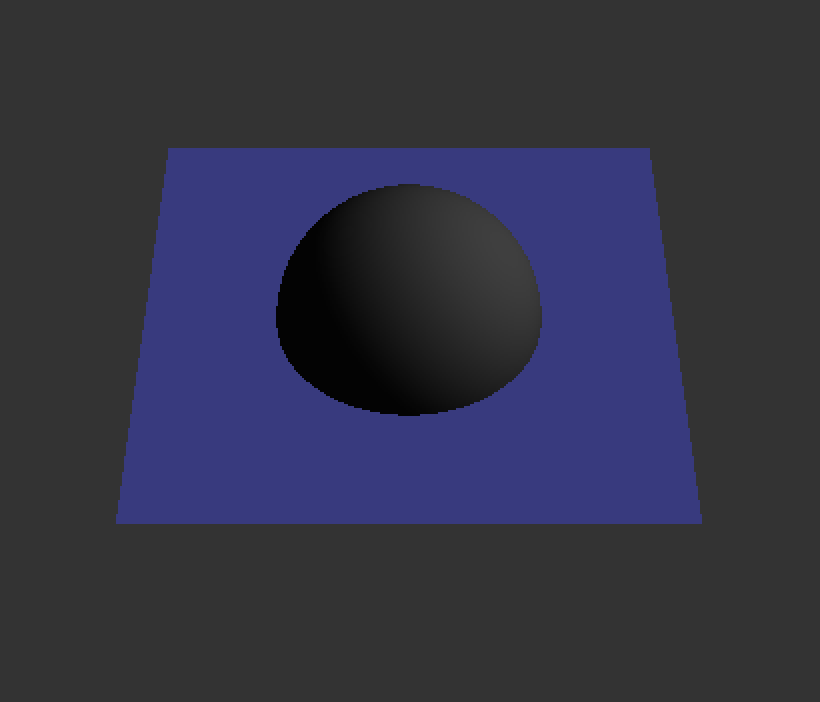
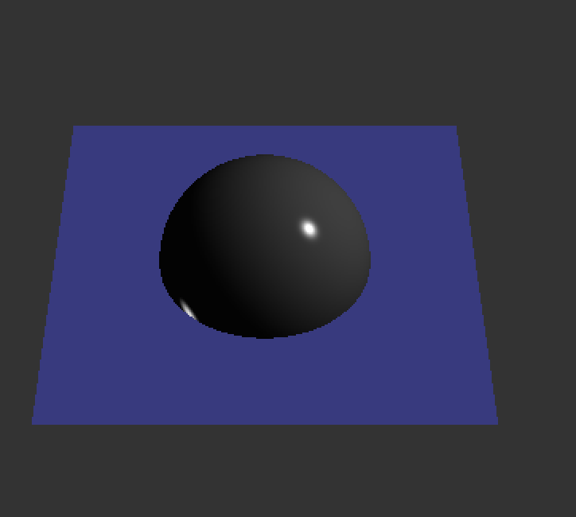
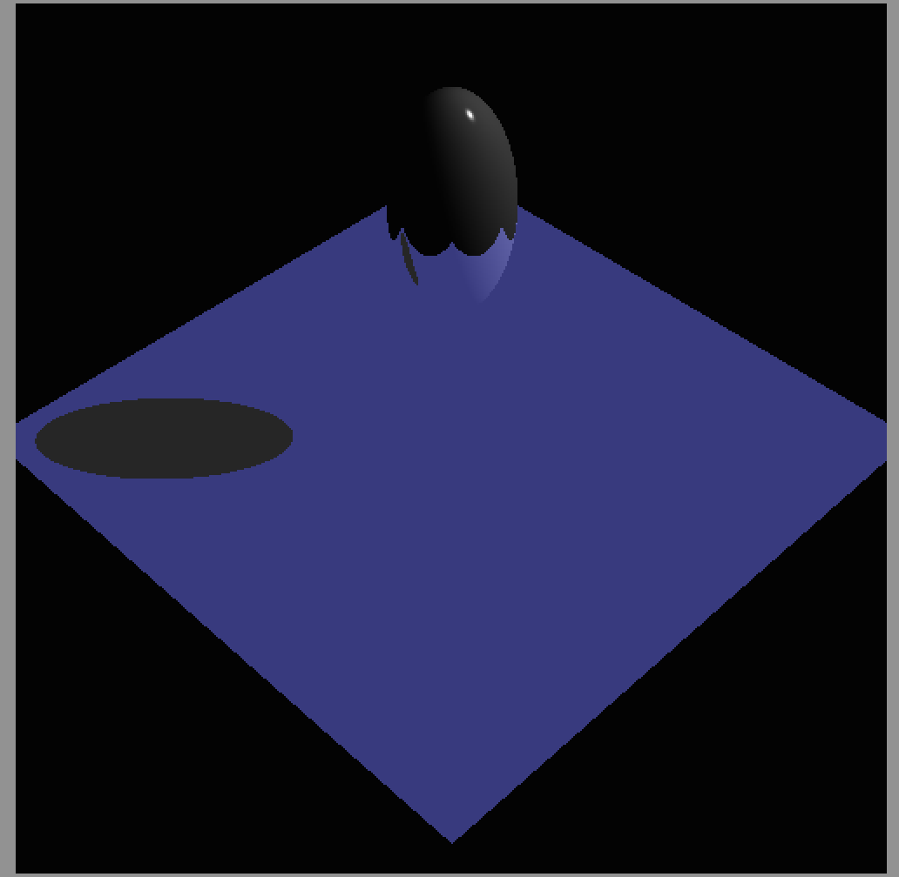
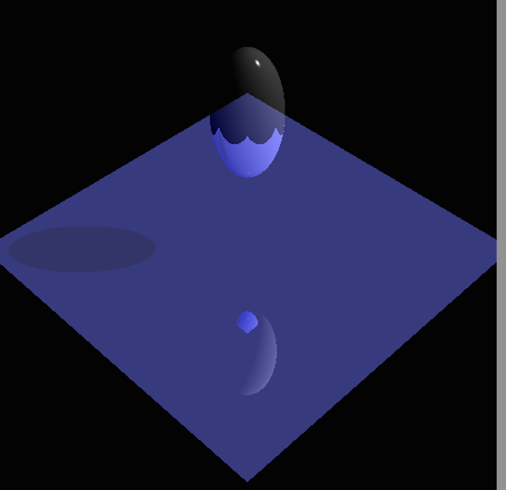
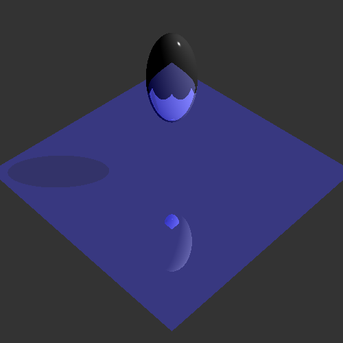
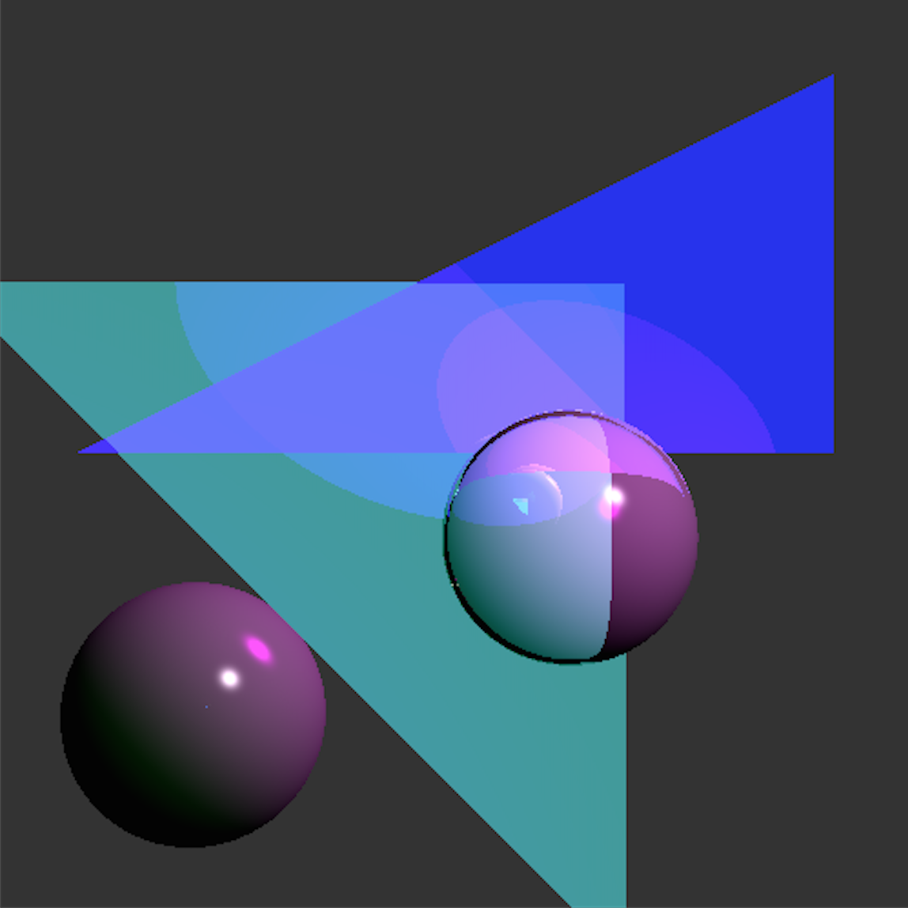
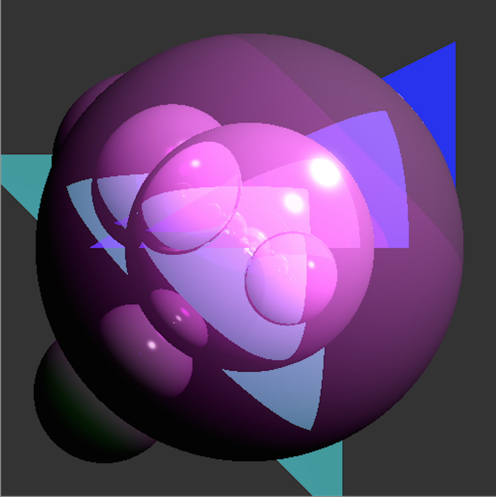

- Completed. Get Ray calculates ray through the (i,j)th pixel of an image plane 1 pixel away.
- Completed and functional.
- Completed. Can accurately intersect with a sphere.
- Completed. Can accurately intersect with a triangle.
- Competed. Can accurately return the color at the point of intersection.
- Completed. Calculates all the diffuse contributions from all lights within the scene and returns them to the GetColor method.
- Completed. Calculates all the specular contributions from all lights within the scene and returns them to the GetColor method.
- Completed. Casts a ray from the intersection to the lightsource, and if it intersects a shape, returns a 0 which removes that light sources contribution to the point.
- Completed. Modified GetColor so that it gathers all light contribution, determines if the spot is in shadow, and returns that to the RayTrace method.
- Completed. Modified intersect to apply the inverse transform to the ray, casts it, then modifies the iInfo by the matrix transforms.
- Completed. Modified GetColor to cast recursive rays throughout the scene and adds the contributed light to the intersection point.
Note: This image may have some artifacts, as it was taken mid-development.
- Completed. Modified GetColor to cast recurse refraction rays through objects based on their indices of refraction and adds the resulting color contributions to the point, modified by each objects transparency.
- Completed. Modified GetColor to use transparency instead of isInShadow so that objects cast partial shadows.
- Completed. Modified GetColor and refract to take into consideration the index of refraction when recursively refracting rays through the scene.
- Completed. Implemented setBoundingBox for rayTriangle and raySphere to calculating a minimum AABB round the object and return it. Then implemented setBoundingBox for RayGroup so that it calculates the minimum AABB around the transformed object bounding boxes. Then implemented BoundingBox3D to calculte intersections with a given ray, and then used intersect within RayGroup to check for intersection with a bounding box before running intersection within it.
- Completed. Modified RayGroup::intersect to check for hits between all bounding boxes in shapes, and then sorts them in order of intersection.
Final output
- I generated a scene implementing all three light sources, using both triangles and spheres, and using transparent refraction.
Submiting one image for the art contest (1 point)
Submitting on .ray file for the art contest (1 point): nal3vm.rayart.1.ray